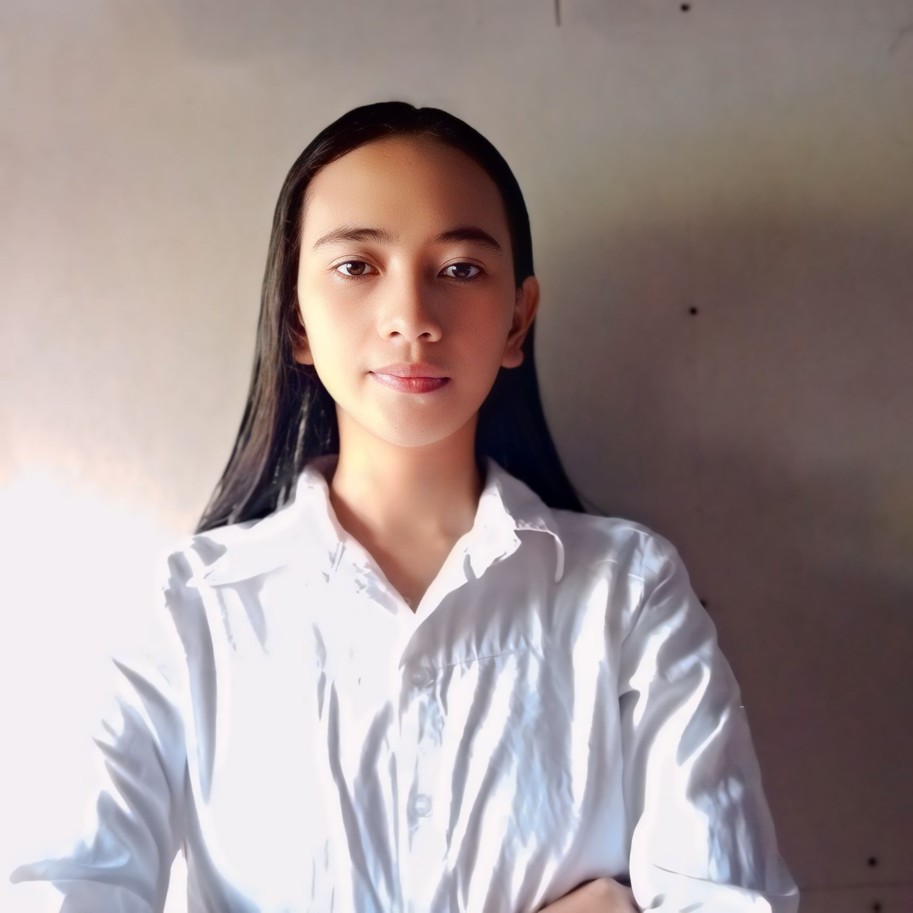

Home
Hello, I’m Angeline Doinog, a passionate and creative IT designer. Welcome to my personal portfolio, where you can learn more about my journey, skills, and projects. Dive in to explore my professional story and feel free to reach out for collaborations or inquiries!
About
My name is Angeline Doinog, and I am an enthusiastic designer specializing in IT. With a strong background in both technology and creative design, I have carved out a niche where I blend technical skills with artistic flair to create visually appealing and functional designs.
I grew up in brgy.Monbon sta.margarita samar, where my interest in technology began when I got my first coding project and started exploring how it worked.
My studies at NWSSU have provided me with a solid foundation in various IT disciplines, including programming,networking,database management. I enjoy learning new technologies and applying them to solve real-world problems.
My career goal is to leverage my design expertise and technical knowledge to create innovative and user-centric designs. I am committed to continuous learning and growth, aiming to contribute to projects that make a significant impact.
Ever since I was a child, I’ve been fascinated by technology and how it intersects with creativity. This passion drove me to pursue a career in IT design, where I can constantly push the boundaries of what’s possible.
Education
Here is my educational background.
-
Primary: Brgy. Napuro Sta. Margarita, Samar
Graduated: 2014-2015 -
Secondary: Clarencio Calagos Memorial School of Fisheries
Graduated: 2021-2022 -
College: Northwest Samar State University
Graduated: 2026-2027
Educational Journey:
My educational journey has been a blend of rigorous academic training and practical experiences. Each step has equipped me with the knowledge and skills to excel in the IT design field.
Skills
Here are some of my skills.
- Creative Thinking
- Problem-Solving
- Team Collaboration
Hobbies
Here are some of my hobbies.
- Photography: Capturing moments and turning them into visual stories.
- Traveling: Exploring new cultures and gaining inspiration from different environments.
- Reading: Enjoying a wide range of genres, from tech articles to creative fiction.
Photo
Contact
You can contact me via email, phone, or Facebook.
- Phone: 09817768088
- Email: angelinedoinog2002@gmail.com
- Social Media: Angeline Casaljay Doinog Facebook